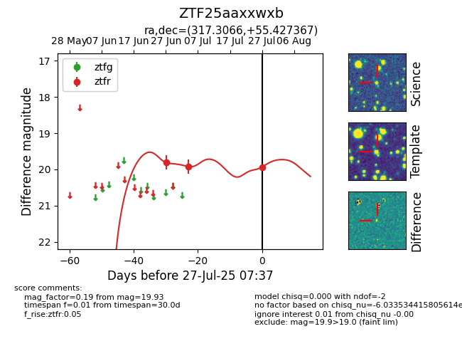

Target ZTF25aaxxwxb at 2025-07-27 07:37, see:
FINK: fink-portal.org/ZTF25aaxxwxb
Lasair: lasair-ztf.lsst.ac.uk/objects/ZTF25aaxxwxb
ALeRCE: alerce.online/object/ZTF25aaxxwxb
alt names
ZTF25aaxxwxb (ztf,fink)
coordinates:
equatorial (ra, dec) = (317.3066,+55.42737)
galactic (l, b) = (94.9077,+5.15187)
photometry
last ztfr=19.93
3 ztfr detections
